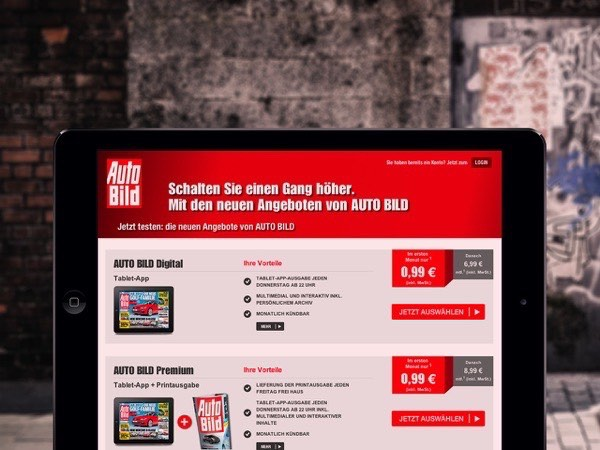

In the shop at autobild.de, which has been implemented by further project partners, readers of Axel Springer can buy subscriptions with their existing login credentials. Axel Springer offers a pure digital edition as well as a bundle with the printed edition.
By using the same login credentials (single sign on), readers download their issues to their iPads or Android tablets for free. By means of the entitlement server API of Adobe Digital Publishing Suite, Axel Springer saves 30% of commission compared to a sale via Apple, Google or Amazon.

The existing communication with the Lesershop24 and the coupon code funtionality were preserved. If you are interested in the entitlement server technology for your Adobe DPS app, please have a look at Portier. Or contact us, if you want to connect your backend application with your apps.
{% for cta in site.ctas %} {% if cta.lang == page.lang %} {% if cta.id == 'contact-entitlement' %} {% include cta-plain.html %} {% endif %} {% endif %} {% endfor %}